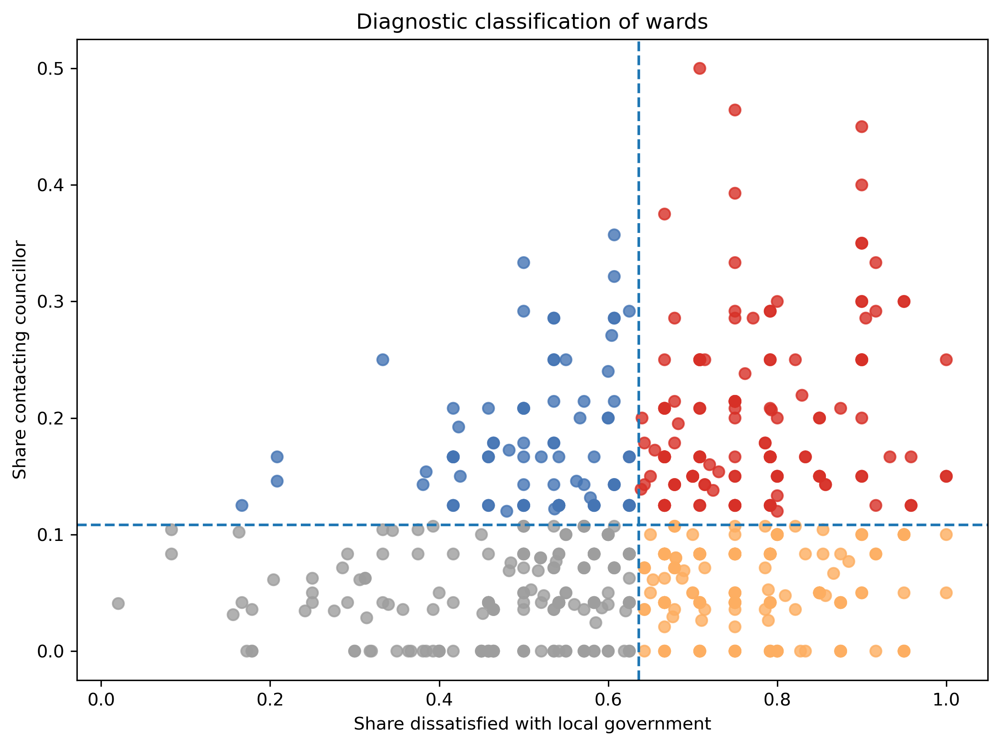
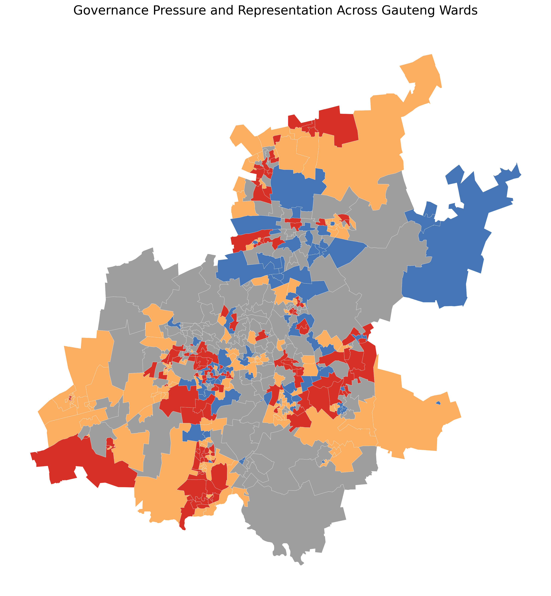
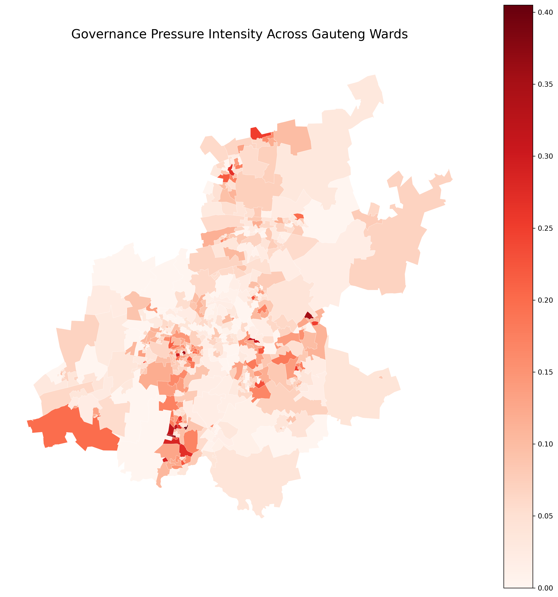

Data Science Case Study
Reading Governance Pressure in Gauteng Wards
Survey data is often used to measure trust, satisfaction, or
performance. This case asks a different question: when residents are
dissatisfied with local government, do they push the system through
political channels, or does dissatisfaction sit without
representation? Using GCRO Quality of Life survey data, this analysis
maps how wards differ in the relationship between local
dissatisfaction and contact with ward councillors.
Core question
What do citizens do with dissatisfaction?
The focus is not sentiment alone, but whether frustration
translates into political contact.
Analytical move
From attitudes to governance signals
The analysis reads wards as local political ecologies rather than
treating the province as one average space.
Main takeaway
Dissatisfaction does not behave the same everywhere
In some wards it becomes pressure on councillors. In others it
does not enter formal channels.
The diagnostic logic
Each ward is classified using two signals: the share of respondents
dissatisfied with local government, and the share who report
contacting their ward councillor. This creates a simple four-part
governance typology.

The geography of representation
Once mapped, the typology reveals that governance dynamics are
spatially uneven. Some clusters show high dissatisfaction with strong
councillor contact. Others show equally high dissatisfaction with
relatively little evidence of institutional channeling.

Where governance pressure is strongest
The final map combines the two signals directly. Darker wards are
places where dissatisfaction and councillor contact are both
relatively high. These are the wards where citizens appear to be
pushing the system most visibly.

Structural insight
The key lesson is that dissatisfaction does not have a single
political meaning. In some places it becomes visible pressure on
formal representatives. In others it sits with much weaker signs of
institutional contact. That difference matters. It suggests that urban
governance is not only about performance or trust in the abstract. It
is also about whether citizens see local political channels as usable,
reachable, and worth pushing.
Methods note
This case uses ward-level aggregation of GCRO Quality of Life survey
responses in Gauteng. Wards with fewer than twenty observations were
excluded from the classification stage to reduce instability in very
small-sample estimates. The figures are descriptive and diagnostic
rather than causal. Their purpose is to show how citizen–institution
relationships vary across urban space.